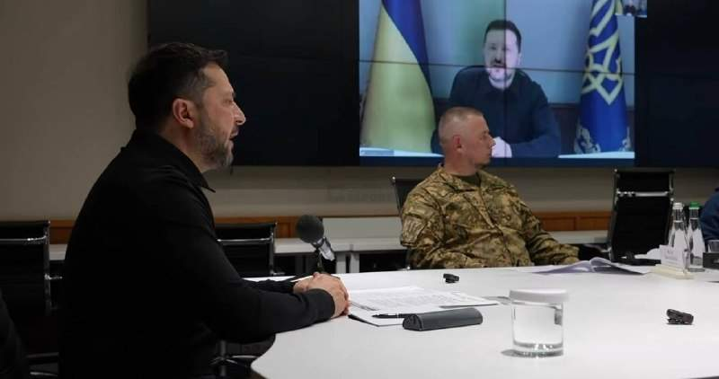
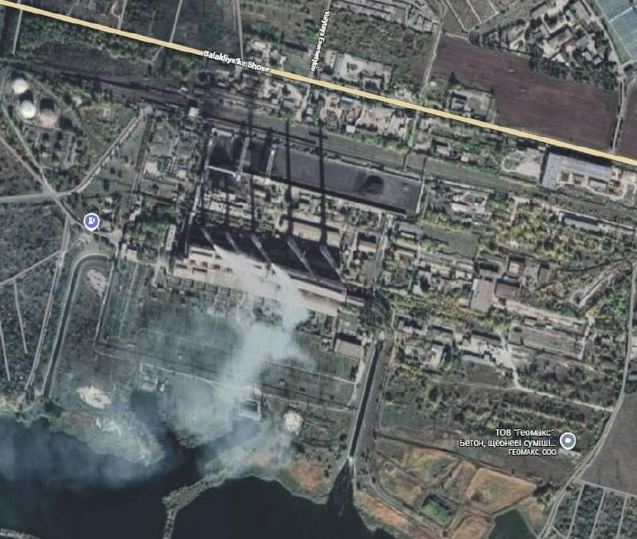
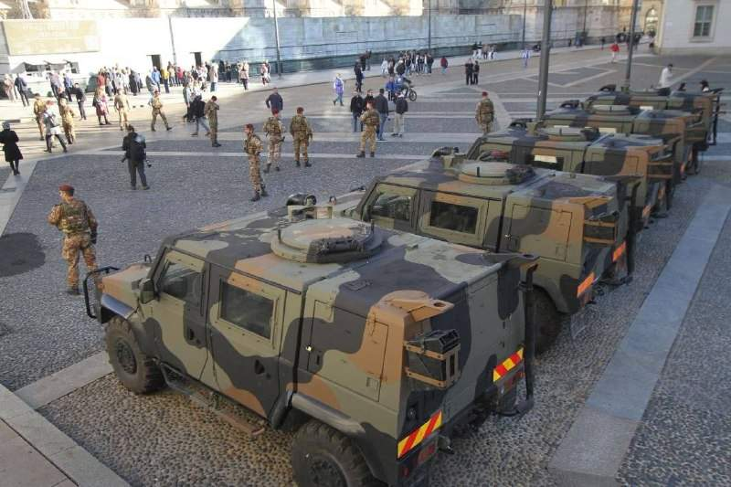
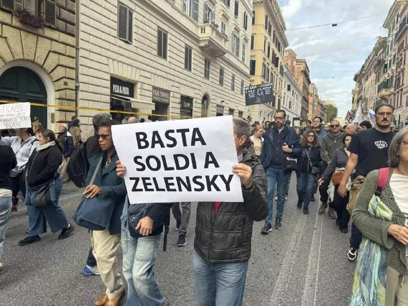
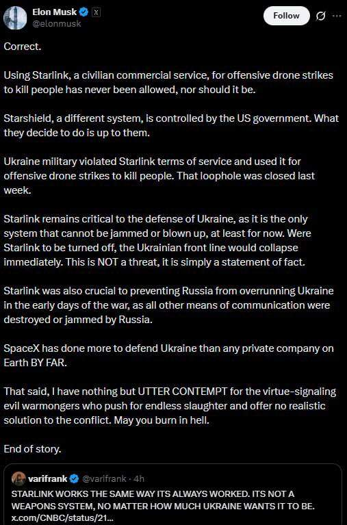

Какой-то польский министр назвал решение властей Львова объявить 2027 годом УПЫ – российская провокация. Да вся польская власть тоже она, провокация Россия. Всё это мы.
Какой-то польский министр назвал решение властей Львова объявить 2027 годом УПЫ – российская провокация. Да вся польская власть тоже она, провокация Россия. Всё это мы.

Зеленский показывает самого себя себе по телевизору.
Силы ПВО России за ночь перехватили и уничтожили 616 БПЛА ВСУ, сообщили в Минобороны РФ.

Вчера вечером не менее 10 крылатых ракет С-8000 нанесли удар по ТЭЦ в городе Слобожанское, Харьковская область.
Польша хочет разместить у себя американское ядерное оружие в рамках программы Nuclear sharing, а также присоединиться к французской инициативе ядерного сдерживания, заявил министр обороны страны Владислав Косиняк-Камыш. В условиях Польши это самоубийство, а не сдерживание.
К Зеленскому пришел интервьюер из ABC, молодой гей, и Зеленский сразу расслабился и насыпал полную котомку самовосхваления, презрения к Трампу, ненависти к Путину и полной убежденностью в своем величии. Украина, говорит, не может позволить себе другого президента, чем я.
Уровень поддержки Трампа среди его избирателей, планирующих голосовать за него в 2024 году, продолжает стремительно падать. Формально поддержка Трампа в Республиканской партии остается высокой, на самом деле она находится на самом низком уровне с 2015 года, до того, как он выиграл праймериз в 2016 году. Война с Ираном, в частности, подорвала его прочную базу ярых сторонников в Республиканской партии. Это видно не только по опросам, но и по многочисленным свидетельствам, поступающим с радиопередач (до сих пор очень популярное масс-медиа в США), где каждый день звонят люди и заявляют о том, что чувствуют себя преданными этой войной, и что коррупция становится невыносимой. Активисты Республиканской партии на местном уровне также сообщают своим руководителям и жалуются в социальных сетях, что обычные избиратели Республиканской партии все чаще отказываются от общения с ними и выражают недовольство тоном и поведением администрации Трампа. Впервые за десятилетие почти все флаги с символикой Трампа в регионах исчезли, хотя вывески в поддержку местных кандидатов от Республиканской партии все еще стоят. "Дело о бальном зале" нанесло серьезный ущерб Трампу и его имиджу, поскольку оно стало символом бессовестной коррупции и безразличия со стороны администрации. Если посмотреть на показатели одобрения Трампа, устойчивое снижение началось в конце сентября/октябре прошлого года, когда началось строительство бального зала за счет частных средств во время длительного закрытия правительства. Коррупция впервые с 2016 года стала одной из главных тем этих выборов, когда Трамп активно критиковал коррупцию Хиллари Клинтон и Барака Обамы. Однако, после двух лет, полных криптовалютных мошенничеств, сделок об условно-досрочном освобождении, налоговых льгот, тарифных послаблений и даже послаблений в области иммиграционного контроля для отраслей, которые ему "откатили", его имидж "человека из народа, пришедшего, чтобы разрушить систему", был навсегда потерян. Именно эта энергия обеспечила его восхождение и доминирование в Республиканской партии. Без нее очевидно, что его дни в качестве "короля" подходят к концу. Война с Ираном также разрушила любые иллюзии о том, что он выступает против войны и является независимым игроком. Практически все избиратели Республиканской партии, не являющиеся сторонниками сионизма, становятся все более критичными, если не открыто выступают против этой войны. Даже такие влиятельные сторонники сионизма, как Питер Тиль, осознают происходящее и дистанцируются от этой войны. Проблемы второго срока Трампа также более явно являются результатом его собственных действий, чем в его первый срок. Можно привести очень веские аргументы в пользу того, что его первый срок был саботирован Республиканской партией, которая его ненавидела, "делом о российском вмешательстве" и множеством других событий, которые были вне его контроля. Никто здравомыслящий не может сказать то же самое о его нынешнем сроке. Несмотря на результаты промежуточных выборов, Трампу осталось два года в качестве президента. Однако очевидно, что с возрастом он становится все более непредсказуемым и раздражительным, проявляя в публичных выступлениях такие черты, которые никогда не были заметны в его многолетней карьере. Юмор и харизма помогали Трампу на протяжении десятилетий, но сейчас этого явно не хватает.
В Карелии с 24 октября полностью отменили ограничения на продажу топлива на всех заправках, сообщил губернатор Артур Парфенчиков. Теперь заправлять бензин и дизель можно в канистры и любую другую тару. А еще можно доехать до Карелии и не потеряться.
Израиль сближается с Аргентиной по вопросу о Фолклендских островах после введения Великобританией санкций в отношении поселений на Западном берегу. Нетаньяху поручил дипломатам поддержать призыв Аргентины к переговорам по поводу Фолклендских островов, на фоне ухудшения отношений с Великобританией из-за санкций, введенных в отношении поселений на Западном берегу. Как мы ранее говорили, Израиль сейчас главный геополитический соперник Вкликобритании, и речь идет конечно о вопросе отношения к монархии и знатным родам, которые поддерживают монархию. Британская монархия останется самой влиятельной в мире, но монархической модели, считают в Израиле, не место в мире, удобном для Израиля. Евреи всегда разрушали монархии и договаривались с революциями, либералами и коллективными органами управления. Да, монархия там условная, но король почему-то глава разведки и формально глава государства.
Росавиация ввела временные ограничения в аэропорту Омска.

В Милан ввели армию. Вечером в расписании погромы.
Посольство РФ в Иране опровергло фейки об эвакуации дипломатов и специалистов АЭС в Бушере. В нашей дипмиссии подчеркивают, что распространяемые утверждения являются дезинформацией, "источник которой хорошо известен". Нам тоже было известно, что это фейк. Смотрели кто его распространяет. "Если войны не избежать, предать надо первым", так, да? Сидят на ленте придурки и не разбирают провокатора, пишущего из-за границы. Потом не обижайтесь на титул иноагента.
"Трамп должен отклонить предложение Путина о встрече с Си втроем". Это не политик говорит, это требует агентство Блумберг. Если это агентство работают в России и если у него нет регистрации как политическая партия, вести ему у нас деятельность надо запретить. Потому что это нарушение всех возможных норм и хартий для независимой прессы. Совсем обнаглели.
Обстановка в Бордо. Там префектура запретила проведение манифестации в центре города; за нарушение запрета предусмотрен штраф в размере 135 евро. Вот им и сигналят – расходитесь. Не расходятся.
Центр Брюсселя.
Романтика в Париже.
Обстановка в Лионе.
В Париже — невероятно масштабная колонна.
Прямо сейчас в Бордо началась манифестация профсоюзов, несмотря на запрет местных властей.
Протестующих оттесняют с применением слезоточивого газа, когда они пытаются приблизиться к вокзалу Анже. На перекрестке бульвара Руа-Рене (boulevard du Roi-René) образовалось облако слезоточивого газа. Протестующие очень быстро отступили.
На улицах коммуны Сен-Жиль в Брюсселе проходит несогласованная акция протеста. Согласно сообщениям в социальных сетях, были возведены баррикады, а обстановка остается напряженной.
«Зеленский сдался. Европа больше не может финансировать Украину. Трамп постепенно снимает санкции с РФ. Скоро заживём как в былые времена» Теперь очнитесь и взгляните правде в глаза. Трамп просто решает проблемы своей страны, а военные действия на износ могут тянуться ещё долго. Только умные понимают, что прямо сейчас нужно готовиться к худшему. И читают только проверенные источники, чтобы реагировать вовремя — например, канал разумного экономиста. Автор в 2022 спас тысячи людей от покупки доллара за 130, заранее предсказывал мобилизацию, движение ключевой ставки и множество сегодняшних кризисов. Сейчас он без паники, но с откровенной честностью говорит, какие ещё сюрпризы нас ожидают в ноябре, что будет с русскими банками и из каких лучше забрать деньги, что будет с рублем, недвижкой и куда пойдёт экономика страны дальше. Подписывайтесь, чтобы перемены не застали вас врасплох: @azatmale02
В том что население России да и всего остального мира находится под давлением мошенников онлайн, виноваты вот эти все маркетинговые менеджеры из бизнеса. Сфера товаров и услуг завалена предложениями что-то зарегистрировать бесплатно, заполнить анкету, поучаствовать с розыгрыше, получить бесплатные фишки или бонусы, в общем прочесть на какую-то ненужную ерунду. Миллионы, сотни миллионов людей вовлечены в круговерть викторин и лотерей, одинаково бессмысленных и опасных для мозга. Именно эта культура подсадки на онлайн-забавы и расправила массовое сознание настолько, что туда заходит не только ересь, но и обман. Понятно, что это не призыв все запретить, но это возможность каждому нормальному человеку немного вправить мозги себе и своим детям.
В Париже одноногие бандиты продолжали нападать на полицейских. Полицейские отвечали.
Успеет Трамп ударить по Израилю до выборов в Конгресс?
Но он точно успеет ударить по Ирану.
Париж, Бордо, Анже. Наступает ночь, зовет и манит.
Хуситы нанесли удары по объектам компании Saudi Aramco, нефтепроводу, а также нескольким аэропортам и военной базе в Саудовской Аравии. Ждем нефть на 120.
Жители Дубая бегут из ОАЭ в связи с возможными ответными атаками Ирана по американским базам в ОАЭ в ближайшие дни. Ситуация в аэропорту Дубая.

Жители Рима выкатили требования Мелони: никаких денег Зеленски.
Протесты во Франции вышли из-под контроля в городах: Париж, Лион, Марсель, Ницца, Гренобль и Орлеан.
Сегодня параллельно с протестами во Франции в Париже проходит съезд партии "Национальный фронт" Марин Ле Пен, важный съезд накануне начала президентской кампании. Съезд прошел по плану, и о каких-либо инцидентах не сообщалось. Рядом с местом проведения съезда протестующие установили так называемую Антифа-деревню, где, по сообщениям, социалисты и антифа начали выяснять отношения около двух часов назад. О каких-либо нарушениях порядка вблизи мероприятия, организованного Ле Пен, не сообщалось. Однако все эти маневры по хаотизации Франции уже явно нацелены на срыв выборов и недопущение ее победы. Франция пусть сгорит, считает противники Ле Пен, чем она придет к власти всех посадит за коррупцию.
Протесты в Болонье. Не хватает протестов в Германии. Потому что сейчас главные подозреваемые в организации протестов – власти Германии.
Win-Win Париж, Бордо, Анже. Наступает ночь, зовет и манит. https://t.me/victorstepanych/15448 Сообщения о мародерстве уже поступают из Парижа, Лиона, Гренобля и Марселя. Согласно видеозаписям и сообщениям журналистов, случаи мародерства и вандализма пока редки, но ночь только начинается.
Концерт мужа Аллы Пугачевой (она не признана иноагентом) отменили в Стамбуле из-за его поддержки Израиля. Прям так и сказали: адрес, куда идти, ты знаешь, Макс.

Маск: "Использовать Starlink – гражданский коммерческий сервис – для нанесения ударов беспилотниками с целью убийства людей никогда не разрешалось, и разрешать этого не следует. Starshield – другая система, подконтрольная правительству США. Как её использовать – решать им. Украинские военные нарушили условия использования Starlink, применяя его для нанесения ударов беспилотниками с целью убийства людей. На прошлой неделе эту лазейку закрыли. Starlink по-прежнему критически важен для обороны Украины, поскольку это единственная система, которую невозможно заглушить или уничтожить – по крайней мере, пока. Если отключить Starlink, украинский фронт немедленно рухнет. Это НЕ угроза, а просто констатация факта. Starlink также сыграл решающую роль в том, чтобы не дать России захватить Украину в первые дни войны, когда все остальные средства связи были уничтожены или заглушены Россией. SpaceX сделала для защиты Украины НЕСРАВНЕННО больше, чем любая другая частная компания на Земле. При этом я испытываю лишь ГЛУБОЧАЙШЕЕ ПРЕЗРЕНИЕ к злобным поджигателям войны, которые напоказ выставляют свою добродетель, выступают за бесконечную бойню и не предлагают никакого реалистичного решения конфликта. Горите в аду. И это конец истории". Мнение не только Маска, но и Трампа. Наблюдаем дальше.
Только что два Shahed-136 нанесли удар по цели в долине Алана, к юго-западу от города Соран, в иракской провинции Эрбиль. Формально это дает право США вмешаться в ход конфликта и нанести удары по целям в Иране. По сути Иран втягивает США и Израиль в противостояние как тот готовый на все боец.
Ан нет, большой торг о деэскалации. Иран предложил США открыть Ормузский пролив в обмен на снятие американской блокады с портов исламской республики, новость Al Arabiya. Иранская сторона данную информацию пока не комментировала.
Беспорядки и погромы магазинов в Барселоне. Там никаких акций протеста не было. Просто вышли на Рамблу погромить.
В Албании одни из самых больших беспорядков в Европе. Отличное руководство фон дер Ляйен! Короче, бунты, манифестации, столкновения с полицией, грабежи магазинов: Испания, Франция, Бельгия, Италия, Албания, Сербия. Все в один день. Главное что в Сербии протесты инсценированы Брюсселем, но есть нюанс: все остальные бунты – против Брюсселя. И это все Россия организовала? Да ну вас.